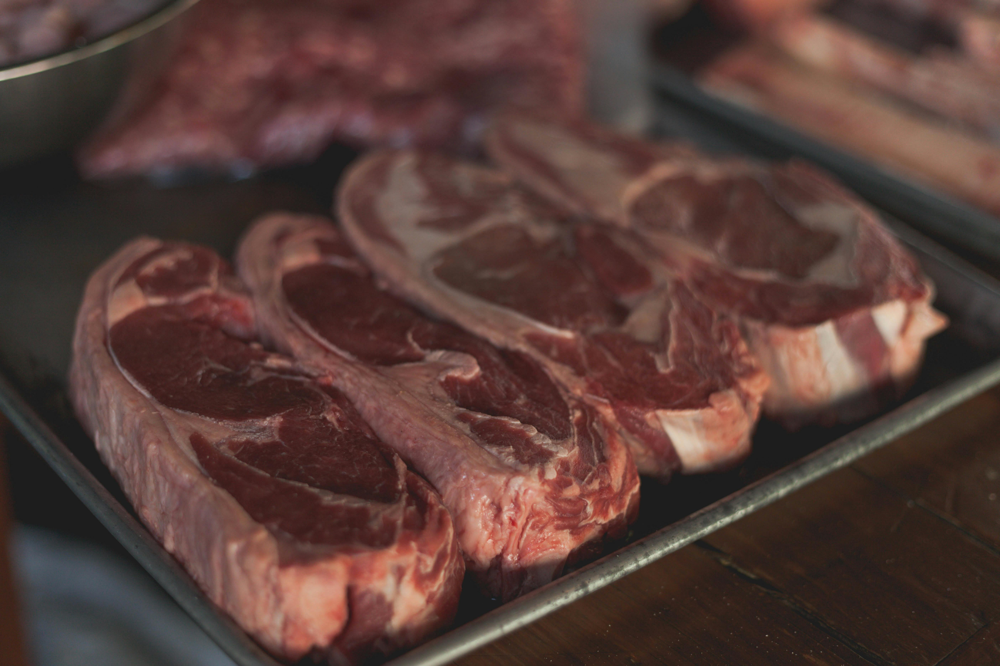
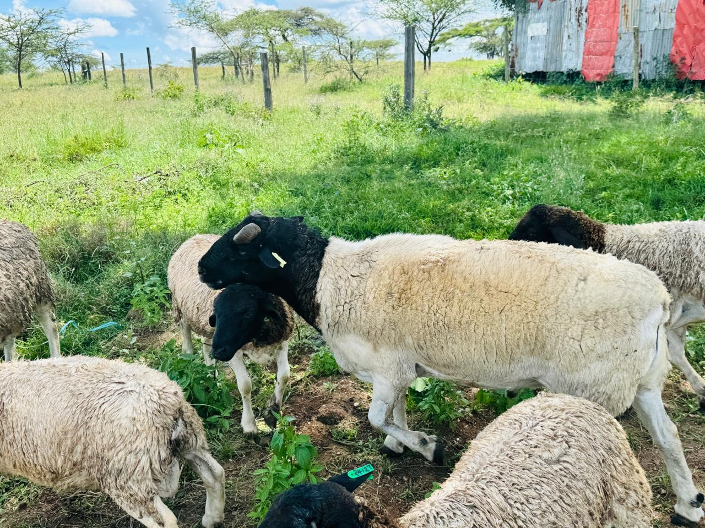

Traceable & High-Quality Livestock
From our farm to your table, ensuring quality every step of the way.

Sustainable Farming Practices
Empowering smallholder farmers and regenerating the land.

Building a Resilient Supply Chain
Connecting local producers with regional and global markets.